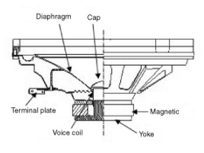
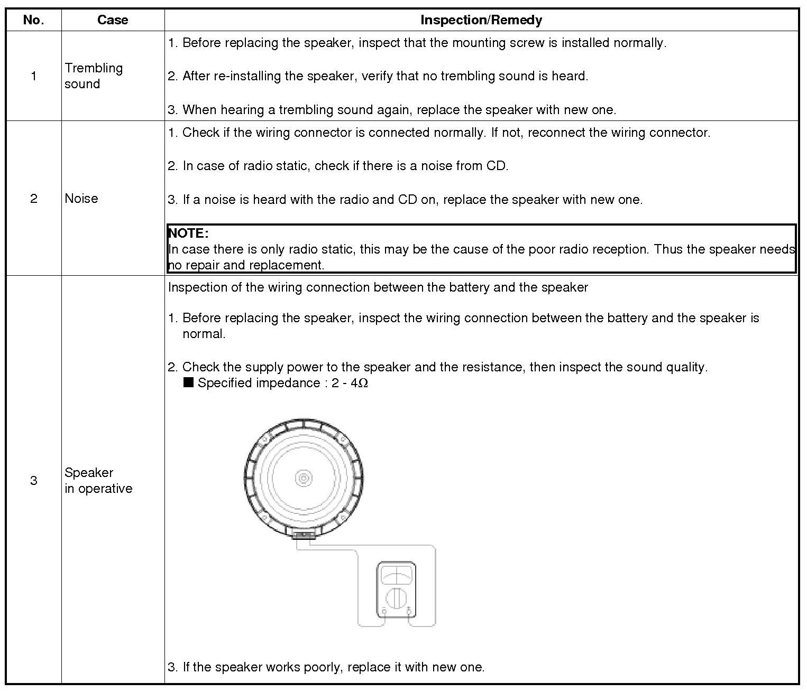
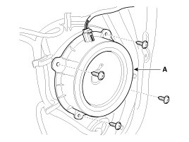
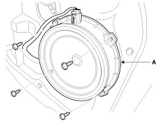
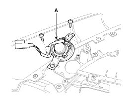

Speaker: Service and Repair
Inspection
1. Troubleshooting for Speaker
(1) Basic inspection of speaker
Inspect the sound from speaker after verifying that the speaker mounting screws are removed and the wiring connector is connected to remove any possible vibration transmitted from body trims and surrounding parts.

(2) Case Troubleshooting

CAUTION:
When handling the speakers:
- Do not damage the speaker with impact, like dropping or throwing it.
- Be careful not to drop water and oil on the speakers.
- Caution during handling of speaker because the material of diaphragm is paper which is easily torn by impact or external force.
- Modifying the audio system may cause damage to the speakers. If this is the case, the speakers are not covered by the manufacturer's warranty.
Removal
Front Speaker
1. Remove the front door trim panel and speaker connector.
2. Remove the front speaker (A) after loosening 4 screws.

Rear Speaker
1. Remove the rear door trim panel and speaker connector.
2. Remove the rear speaker (A) after removing 4 screws.

Tweeter speaker
1. Disconnect the connector after removing the front door delta cover.
2. Remove the tweeter speaker(A) after loosening 2 screws.

Installation
Front Speaker
1. Install the front speaker.
2. Install the front door trim.
Rear Speaker
1. Install the rear speaker.
2. Install the rear door trim.
Tweeter speaker
1. Connect the connector.
2. Install the tweeter speaker and front door delta cover.